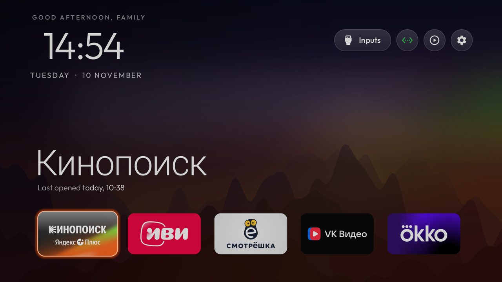
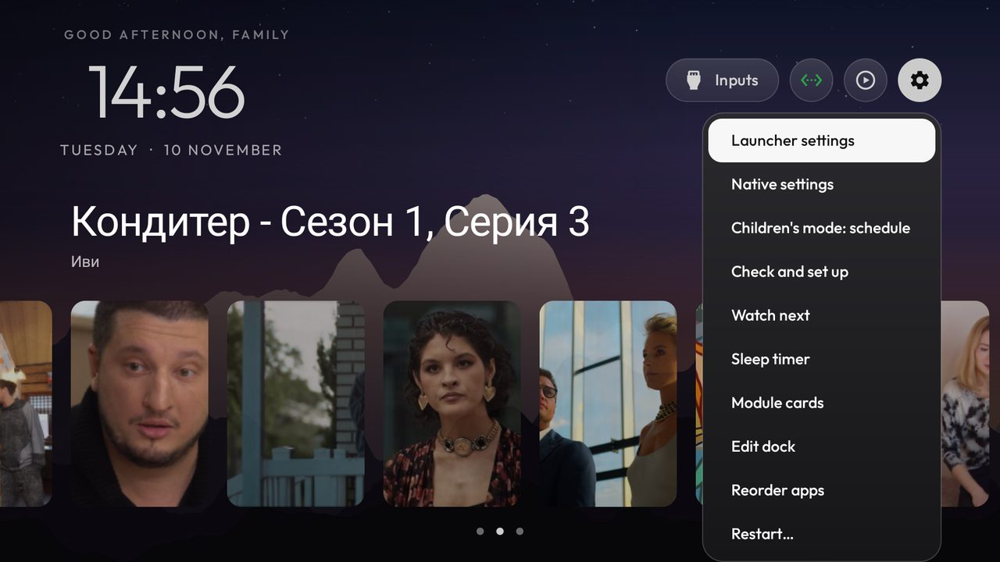
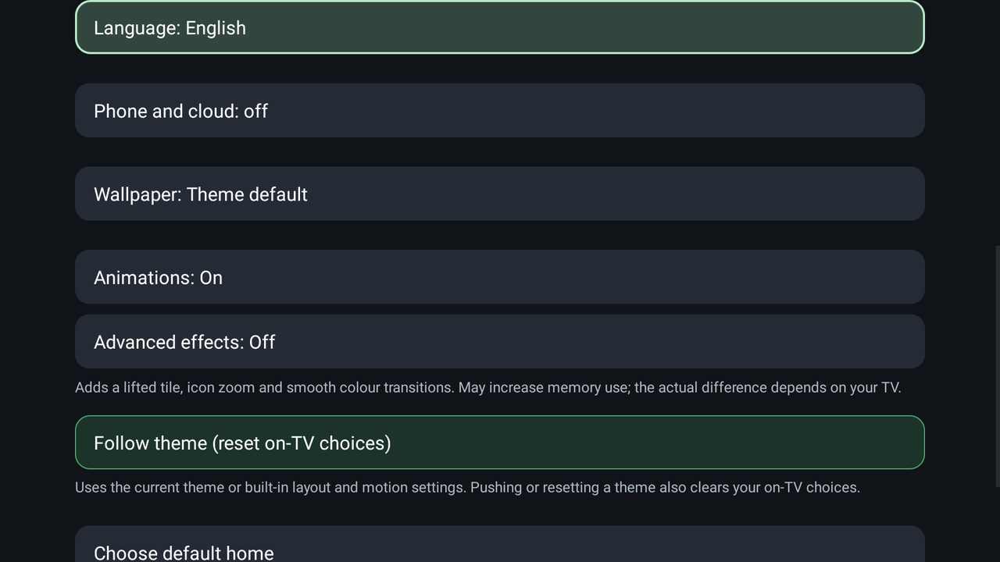
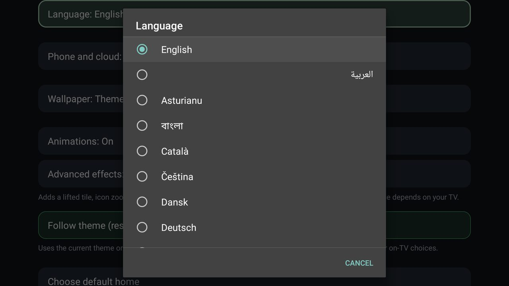
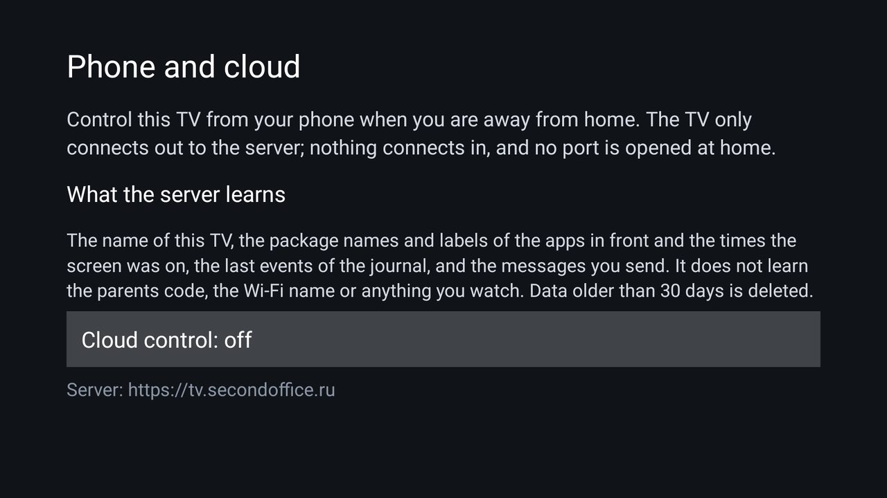
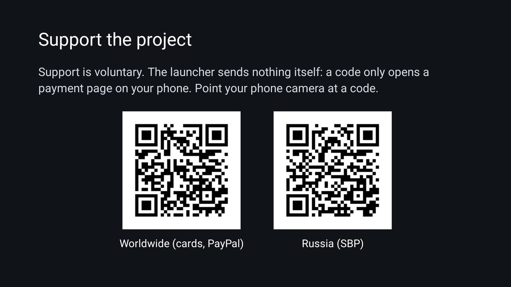

A slow TV made fast, and a home screen where parents set the rules
MyTV is an open-source Android TV launcher. It switches off the services you never use, and its sanitizer keeps the memory free on its own, so the TV stays quick. For a family it adds a children's schedule with a PIN, phone control and a sleep timer. It needs no account.
Why the TV gets faster
A slow TV is rarely slow only because of its chip. On our TCL the memory was full nearly all the time: the 600 MB swap was almost always used, and with five heavy apps open the system's memory cleaner took 95% of a core. MyTV goes after that.
-
Services you never use are switched off
The install tools disable the manufacturer's telemetry, ad services, content rows and preloaded apps, with
We did not measure a percentage for this step on our TV, so we do not give one.pm disable-user. Nothing is uninstalled, and one command puts everything back. The repository has lists for more than 250 TV models; on our TCL it came to 15 packages. -
A launcher that does almost nothing while idle
It draws only when something changes. In our measurement on one TCL TV (version 2.7) it held 42 MB and used 0 to 0.6% of a core while idle. Two other launchers we tried held 64 MB and 140 MB and used about 13% and 30 to 58% of a core.
One TV, a few runs. We will measure the current version again. -
A sanitizer that tidies the TV by itself
Nothing polls. It looks at the memory when Home has been quiet for three minutes, when the screen goes off, and when Android asks apps to give memory back. If the swap is nearly full or the RAM is low, it closes the background processes of your apps, never the one on screen, one playing in the background, the launcher or your VPN app, and at most once in 20 minutes. If your VPN dropped, it opens the VPN app again after four quiet minutes.
Still being tried on one TV. One setting turns it off.
What a family gets
The speed is the reason. These are the family features on top of it.
-
Children's mode
A schedule for when the TV may be used, a PIN stored as a salted hash, a journal of what happened, a daily screen-time table for the last 30 days, and bonus minutes a parent grants on the TV with the PIN. If the helper service is switched off, the journal says so.
-
Phone control at home
The TV shows a pairing code. A parent's phone enters it and gets a small page served by the TV itself on port 8787, only inside your home network. Lock, unlock, send a message over the video, power off. Each paired phone has its own revocable token.
Bots and your own scripts use the same documented HTTP API. -
Sleep timer over the video
Up and Down change the minutes while the video keeps playing: off, 15, 30, 60 or 90. A warning shows a minute before, any remote key adds 15 minutes, and at the end the TV goes to standby. On a TCL remote a double tap of the gear button opens it.
Standby needs Android 9 or newer. -
Watch next first
Home opens on the shelf of films and episodes you were in the middle of, and the apps are one press down. The permission to read TV listings is asked only when you turn the shelf on.
-
Power off from the phone
Switch the TV off now or after a delay of up to 24 hours, and cancel a pending one. The same warning and the same +15 minutes apply.
-
A stuck lock has a way out
If the PIN is lost, a marker file sent over adb lifts the lock and clears the code set on the TV. Nothing else can.
Install it from your computer
No account and no root. You need a computer on the same Wi-Fi as the TV, and about ten minutes.
The automatic way
Do step 1 below, then run one installer. It finds adb (and downloads it if needed), checks the download, installs MyTV, gives it the permissions the family features need, switches the key helper on and makes MyTV the home screen. The old launcher stays untouched.
On macOS and Linux, in a terminal, with your TV's address:
curl -fsSL https://github.com/iResultMan/MyTV-launcher/releases/latest/download/install-mytv.sh | bash -s 192.168.1.50
On Windows, double-click the downloaded file and type the address when it asks. Or do it by hand:
-
1. Turn on debugging on the TV
Settings, Device Preferences, About: press OK on Build seven times. Back, then Developer options: switch USB debugging on. If there is a Network debugging toggle, switch it on too. Note the TV's IP address under Settings, Network.
-
2. Connect from the computer
Install Google's platform-tools (they contain
adb) on Windows, macOS or Linux. In a terminal, in the folder with the download:adb connect 192.168.1.50:5555
Use your TV's address. Allow the connection on the TV screen when it asks.
-
3. Put MyTV on the TV
One command copies the app to the TV:
adb install -r MyTV.apk
If another build with the same application id (com.gathin.tvhome) is already on the TV, uninstall it first: Android will not replace an app signed by someone else. -
4. Make it Home and switch the rest off
The guided path does the backup, applies the list of services to switch off for your TV model, makes MyTV the home screen and rolls back if Home does not land on it. It is in the README under "Doing it by hand".
Open the README. The automatic installer above does steps 2 and 3 and the helper setup for you.
On the screen
Screenshots from a real TCL TV, with the launcher set to English.






What is tested, and what is not
We would rather say it plainly than have you find out on a family evening.
Tested on a real TV
- Children's lock and unlock from the script, and the usage tables.
- Sleep timer: warning, +15 minutes, standby, wake by remote.
- Power off from a script, with a delay and cancel.
- The phone page and pairing on a home network.
- The weather block and the Watch next shelf.
Still being tried on one TV
- The sanitizer: the tidy-up of background apps when memory is low, and the restart of a VPN app when Home sits idle.
- Children's schedule on the real TV, and the phone page's power-off button.
- Switching the TV off by voice through HDMI-CEC.
- The language list loaded from this repository, and the new defaults of the install script.
- Translations other than English, Russian and Hebrew fall back to English.
What leaves the TV
Very little, and you can read every line that does it.
-
The network permission
By default two things go online. The optional weather block asks Open-Meteo once every 30 minutes while Home is shown. Opening the language dialog reads one small list of languages from this project's GitHub repository, and keeps it. Plain http is allowed for your home network only; anything else is refused before a connection is made.
-
The accessibility service
It sees which app came to the front and, while the TV is locked, the remote's key presses. It reads no screen content, text or passwords.
-
The PIN and the phones
The PIN is a salted hash. Phone tokens travel in a header, never in an address, and the TV keeps only their hashes. Children's data stays on the TV and can be erased there.
-
Cloud control, only if you turn it on
To control the TV from your phone away from home, you can switch on Cloud control and pair a Telegram bot with a code shown on the TV. The TV only connects out; nothing connects in and no port is opened. The server learns the TV's name, which apps were in front and when the screen was on, the last journal events and your messages, not the parents code, the Wi-Fi name or what you watch. It deletes data older than 30 days, and turning the switch off deletes the TV's data at once. It is off until a parent turns it on.
Keep it going
MyTV is free, and it will stay usable without paying. If it saved you an evening, a donation pays for the testing TV time and the server for the bot.